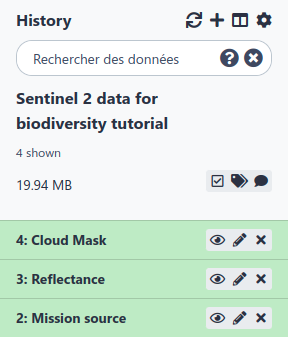
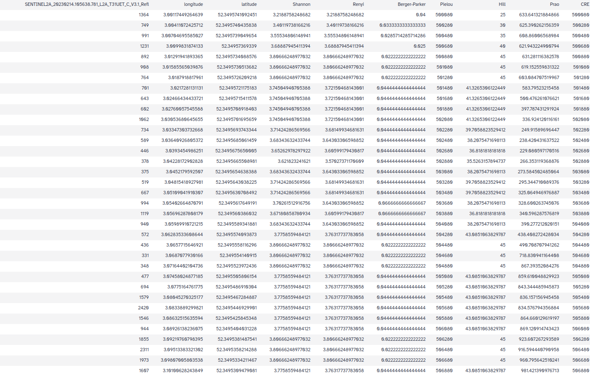
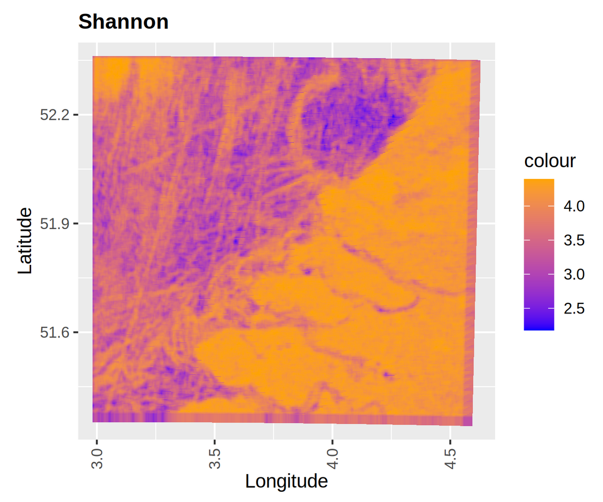

This tutorial will guide you on getting Sentinel 2 data and processing them in order to calculate and visualize biodiversity indicators. This workflow made of 6 tools will allow you to explore Sentinel 2 data in the view of making biodiversity analyses.
Spatial diversity measurements should not replace in situ biodiversity data, but rather complement existing data and approaches. Spatial diversity estimates are currently based on long time scales, allowing more general predictions about rates of change in diversity. In practice, spatial data incorporate information on surface properties, including functional aspects, taxonomy, phylogeny and genetic diversity. 
The tools explained here are useful for observing variations in spatial and temporal ecosystem properties given the intrinsic relationship between spatial variations in ecosystems and pixel values of spectral signals. A single measurement cannot provide a complete description of all the different aspects of ecosystem heterogeneity. Therefore, the combination of multiple tools in a Galaxy-Ecology workflow offers multiple approaches to unravel the complexity of ecosystem heterogeneity in space and time.
So, we will compute biodiversity and spectral indices mainly using reflectance information.
The reflectance is a proportion on reflected light on an area. It’s the ratio between the electromagnetic incident wave on the area and the reflected wave. It’s often a percentage between reflected intensity and incident intensity assumed as energy quantity.
Figure 1: Sentinel 2 toolsuite workflow
Each part of this workflow has elementary steps :
A first step to preprocess Sentinel 2 data:
Preprocess Sentinel 2 data
A second step to compute biodiversity indicators
Global overview
For Canopy
A third step to compute spectral indices:
Spectral indices
EBV
Spectral indices are used to highlight particular features or properties of the earth’s surface, e.g. vegetation, soil, water. They are developed on the basis of the spectral properties of the object of interest.
Knowledge of the leaf cell, plant structure, state, condition and spectral properties is essential to perform vegetation analysis using remote sensing data.  
Spectral indices dedicated to vegetation analysis are developed on the basis that healthy vegetation reflects strongly in the near infrared (NIR) spectrum while absorbing strongly in the visible red.  
In this tutorial, we’ll be working on Sentinel 2 data extracted from the Theia Land portal. First those data will be prepared. After pre-processing to fit the input format of the tools, we’ll see how to calculate biodiversity metrics.
As your processing heavy data some of the steps can take some time. Notably, the step Create Biodiversity maps can run for 2 days. We advise to let it run and proceed with the tutorial. Once, the pre-processing part is done all the steps can be done separately. Thus, no need for you to wait the end of each tool before running another one.
Upload and pre-processing of the data
This first step consist of downloading and properly prepare the data to use it in Sentinel 2 toolsuite.
Hands-on: Data upload
Create a new history for this tutorial and give it a name (example: “Sentinel 2 data for biodiversity tutorial”) for you to find it again later if needed.
Click the new-history icon at the top of the history panel.
If the new-history is missing:
Click on the galaxy-gear icon (History options) on the top of the history panel
param-select“Where does your data come from ?”: ‘From Theia’
Click on Execute
Comment
The interesting output is the ENVI image format which is a binary raster file with an accompanying header file. The data are stored as a binary stream of bytes in a BIL file without extension and the metadata are stored in the .hdr file. These data are in the output Reflectance. You can directly use the output Reflectance for the rest of the analysis.
Figure 3: Preprocessing outputs
Question
What are the files you are interested in for the following tools ?
The 2 files in the Reflectance folder that finish by “_Refl” and “_Refl.hdr”
Producing biodiversity indicators
You can choose to compute spectral and biodiversity indicators either for global remote sensing data or for a canopy.
Hands-on: Choose Your Own Tutorial
This is a "Choose Your Own Tutorial" section, where you can select between multiple paths. Click one of the buttons below to select how you want to follow the tutorial
Here you can choose which tutorial you want to folllow according to if your are more interested about studying canopy remote sensing data or more global ones
Compute a PCA
Hands-on: Principal components analysis for remote sensing data
Compute a PCATool: toolshed.g2.bx.psu.edu/repos/ecology/srs_pca/srs_pca/0.0.1 with the following parameters:
param-select“In which format are your data ?”: ‘The data you are using are in a zip folder Reflectance’
param-file“Input data”: Reflectance (output of Preprocessing sentinel 2 datatool)
param-select“Do you want to do a PCA or a SPCA ?”: ‘PCA’
Check that the “Input raster” datatype is bil and that “Input raster header” datatype is hdr
Go on your raster data
Click on galaxy-pencil to edit it
Click on galaxy-chart-select-data Datatypes
On “New Type” Select bil
Press Save
Comment
Do the same for the raster header with the datatype hdr
Compute biodiversity indices
Hands-on: Biodiversity indicators for global remote sensing data
Compute biodiversity indicesTool: toolshed.g2.bx.psu.edu/repos/ecology/srs_global_indices/srs_global_indices/0.0.1 with the following parameters:
param-select“In which format are your data ?”: ‘The data you are using are in a zip folder Reflectance’
param-file“Input data”: Reflectance (output of Preprocessing sentinel 2 datatool)
param-text“Write a number of the value of alpha”: ‘1’
Check that the “Input raster” datatype is bil and that “Input raster header” datatype is hdr
Go on your raster data
Click on galaxy-pencil to edit it
Click on galaxy-chart-select-data Datatypes
On “New Type” Select bil
Press Save
Comment
Do the same for the raster header with the datatype hdr
param-select“In which format are your data ?”: ‘Your already have the files in ENVI BIL format’
param-file“Input raster”: PCA raster (output of Compute a PCAtool)
param-file“Input header”: PCA header (output of Compute a PCAtool)
param-text“Write a number of the value of alpha”: ‘1’
Here again check that the “Input raster” datatype is bil and that “Input raster header” datatype is hdr
Figure 4: Global biodiveristy tabularFigure 5: Global biodiveristy graph
These 2 pictures are only exemple it is normal if you don’t have exactly the same output.
Question
How many biodiversity indicators do you have ?
You should have 7 of them (Shannon, Renyi, Prao, Pielou, Hill, CRE, Berger-Parker). If you have only 5 of them, no problem, it just means you data are too small to compute CRE and Pielou but you can still continue your analysis.
Compute a PCA
Hands-on: Principal components analysis for remote sensing data
Compute a PCATool: toolshed.g2.bx.psu.edu/repos/ecology/srs_pca/srs_pca/0.0.1 with the following parameters:
param-select“In which format are your data ?”: ‘The data you are using are in a zip folder Reflectance’
param-file“Input data”: Reflectance (output of Preprocessing sentinel 2 datatool)
param-select“Do you want to do a PCA or a SPCA ?”: ‘PCA’
Check that the “Input raster” datatype is bil and that “Input raster header” datatype is hdr
Go on your raster data
Click on galaxy-pencil to edit it
Click on galaxy-chart-select-data Datatypes
On “New Type” Select bil
Press Save
Comment
Do the same for the raster header with the datatype hdr
Create Biodiversity maps
Hands-on: Biodiversity indicators for canopy remote sensing data
Mapping diversityTool: toolshed.g2.bx.psu.edu/repos/ecology/srs_diversity_maps/srs_diversity_maps/0.0.1 with the following parameters:
param-select“In which format are your data ?”: ‘The data you are using are in a zip folder Reflectance’
param-file“Input data”: Reflectance (output of Preprocessing sentinel 2 datatool)
param-select“Alpha, beta, functional diversity and comparison plot and map”: ‘All of the above’
Check that the “Input raster” datatype is bil and that “Input raster header” datatype is hdr
Go on your raster data
Click on galaxy-pencil to edit it
Click on galaxy-chart-select-data Datatypes
On “New Type” Select bil
Press Save
Comment
Do the same for the raster header with the datatype hdr
What kind of data do you need to use these tools ?
Do you need a shapefile for mapping the diversity ?
Why do you need multiple locations for comparing biodiversity ?
This analisys is for data on forest, it’s a canopy study.
No, only for the comparison with in situ data.
The Bray curtis table compare the diversity between locations.
Spectral indices
Hands-on: Compute spectral indices
Compute spectral indicesTool: toolshed.g2.bx.psu.edu/repos/ecology/srs_spectral_indices/srs_spectral_indices/0.0.1 with the following parameters:
param-select“In which format are your data ?”: ‘The data you are using are in a zip folder Reflectance’
param-file“Input data”: Reflectance (output of Preprocessing sentinel 2 datatool)
param-select“Input the type of indice you want”: ‘NDVI’
param-select“Do you want the raster layer of the indice as an output ?”: ‘No’
Check that the “Input raster” datatype is bil and that “Input raster header” datatype is hdr
Go on your raster data
Click on galaxy-pencil to edit it
Click on galaxy-chart-select-data Datatypes
On “New Type” Select bil
Press Save
Comment
Do the same for the raster header with the datatype hdr
Comment
You can choose whichever indice you want
Figure 10: Normalized different vegetation index
Remotely sensed diversity is consistent with most of the essential spatially constrained biodiversity variables proposed by Skidmore et al. (2015). This highlights the need for increased dialogue and collaboration between the biodiversity monitoring community and the remote sensing community to make satellite remote sensing a tool of choice for conservation. Increased dialogue is also essential within the biodiversity monitoring community to achieve this. From this point of view multiple Satellite Remote Sensing EBV (SRS EBV) were created.
Some of the indices proposed here will allow you to compute SRS EBV.
For instance it allows you to compute one of GEO BON EBV Canopy Chlorophyll Content. This EBV is computed by GEO BON on the Netherlands, here you can compute it on which ever Sentinel 2 data you want by chosing to calculate the indice CCCI.
Figure 11: Canopy Chlorophyl Content index tabular
Question
What’s the difference between biodiversity indicators and spectral indices ?
Biodiversity indicators give us informations on the heterogeneity of the landscape whereas spectral indices inform us on the well being of the vegetation.
Conclusion
You are now all set to use your remote sensing data in order to do a biodiversity analysis. Before you go on one last reflexion.
Question
Should remote sensing replace in-situ data ?
NO ! remote sensing and in-situ data should come and complete one another to have the most complete view of the state of biodiversity.
Key points
Remote sensing data can be useful to find hotspots of biodiversity.
Spectral indices are of key importance to asset vegetation well-being.
Always keep in mind that remote sensing and in-situ data are complementary.
Further information, including links to documentation and original publications, regarding the tools, analysis techniques and the interpretation of results described in this tutorial can be found here.
Feedback
Did you use this material as an instructor? Feel free to give us feedback on how it went.
Did you use this material as a learner or student? Click the form below to leave feedback.
Batut et al., 2018 Community-Driven Data Analysis Training for Biology Cell Systems 10.1016/j.cels.2018.05.012
@misc{ecology-remote-sensing,
author = "Marie Josse and Yvan Le Bras",
title = "Sentinel 2 biodiversity (Galaxy Training Materials)",
year = "",
month = "",
day = ""
url = "\url{https://training.galaxyproject.org/training-material/topics/ecology/tutorials/remote-sensing/tutorial.html}",
note = "[Online; accessed TODAY]"
}
@article{Hiltemann_2023,
doi = {10.1371/journal.pcbi.1010752},
url = {https://doi.org/10.1371%2Fjournal.pcbi.1010752},
year = 2023,
month = {jan},
publisher = {Public Library of Science ({PLoS})},
volume = {19},
number = {1},
pages = {e1010752},
author = {Saskia Hiltemann and Helena Rasche and Simon Gladman and Hans-Rudolf Hotz and Delphine Larivi{\`{e}}re and Daniel Blankenberg and Pratik D. Jagtap and Thomas Wollmann and Anthony Bretaudeau and Nadia Gou{\'{e}} and Timothy J. Griffin and Coline Royaux and Yvan Le Bras and Subina Mehta and Anna Syme and Frederik Coppens and Bert Droesbeke and Nicola Soranzo and Wendi Bacon and Fotis Psomopoulos and Crist{\'{o}}bal Gallardo-Alba and John Davis and Melanie Christine Föll and Matthias Fahrner and Maria A. Doyle and Beatriz Serrano-Solano and Anne Claire Fouilloux and Peter van Heusden and Wolfgang Maier and Dave Clements and Florian Heyl and Björn Grüning and B{\'{e}}r{\'{e}}nice Batut and},
editor = {Francis Ouellette},
title = {Galaxy Training: A powerful framework for teaching!},
journal = {PLoS Comput Biol} Computational Biology}
}
Congratulations on successfully completing this tutorial!
 Marie Josse
Marie Josse
 Yvan Le Bras
Yvan Le Bras
Questions: